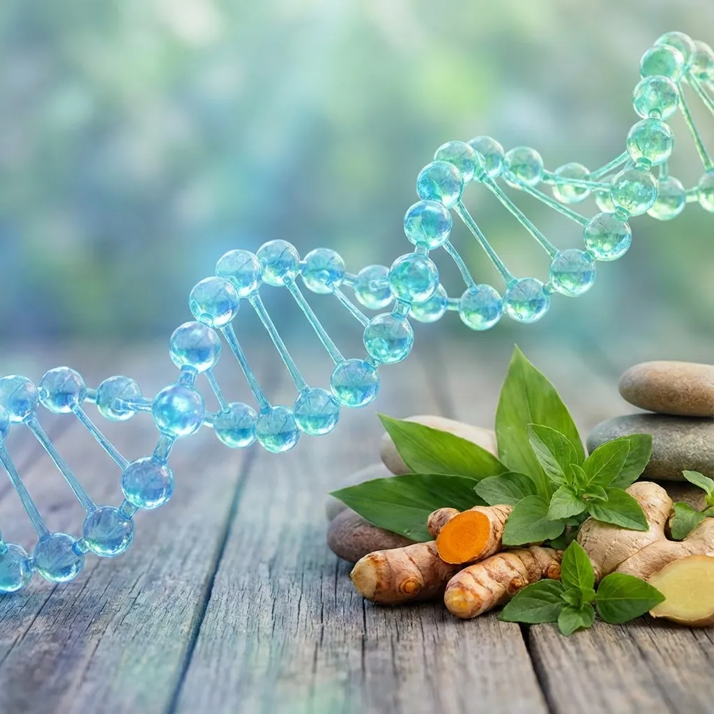

Hondrodox: Suplemento Integral para la Salud Articular
Hondrodox es un suplemento nutricional especializado que combina ingredientes clave para apoyar la salud de las articulaciones, fortalecer el cartílago y mejorar la movilidad general. Este producto ha sido diseñado para personas que buscan mantener o recuperar la flexibilidad articular de manera natural.

Composición y Principios Activos
La fórmula de Hondrodox se basa en una combinación sinérgica de compuestos naturales que han demostrado beneficios para la salud articular en estudios científicos. Entre sus componentes principales se encuentran:
- Glucosamina: Un aminoazúcar natural que forma parte del cartílago articular
- Condroitina: Ayuda a mantener la elasticidad del cartílago
- Colágeno: Proteína estructural esencial para articulaciones y tejidos conectivos
- Extractos herbales: Proporcionan propiedades antiinflamatorias naturales
- Vitaminas y minerales: Apoyan la regeneración del tejido conectivo
Beneficios para la Salud Articular
El uso regular de Hondrodox puede proporcionar múltiples beneficios para quienes experimentan molestias articulares o desean prevenir su deterioro. Los usuarios reportan mejoras en la flexibilidad, reducción de la rigidez matutina y mayor comodidad durante las actividades diarias.
Este suplemento es especialmente útil para atletas, personas mayores, y aquellos con ocupaciones que ejercen presión constante sobre las articulaciones. Al proporcionar los nutrientes necesarios para el mantenimiento del cartílago, Hondrodox ayuda a preservar la función articular a largo plazo.
Modo de Uso y Recomendaciones
Para obtener los mejores resultados con Hondrodox, se recomienda seguir las instrucciones del fabricante en cuanto a dosificación y frecuencia de consumo. Generalmente, los suplementos para articulaciones requieren un uso constante durante varias semanas antes de que se noten mejoras significativas.
Es importante mantener expectativas realistas: los suplementos articulares funcionan mejor como parte de un enfoque integral que incluye ejercicio adecuado, mantenimiento de un peso saludable y una dieta equilibrada.
Complemento con Otros Productos
Hondrodox funciona excelentemente cuando se combina con aplicaciones tópicas como Hondrofrost o Hondro Sol, creando un enfoque dual: nutrición interna y alivio externo. Esta combinación puede proporcionar resultados más completos para el cuidado articular.
Nutrición y Estilo de Vida para Articulaciones Saludables
Además de los suplementos especializados, ciertos nutrientes de la dieta diaria son fundamentales para la salud articular. El malato de magnesio ayuda con la función muscular y puede reducir la tensión en las articulaciones, mientras que alimentos ricos en omega-3 y antioxidantes combaten la inflamación.
Mantener una buena hidratación también es crucial, ya que el líquido sinovial en las articulaciones depende de una hidratación adecuada. Bebidas rehidratantes pueden ayudar a mantener el equilibrio de electrolitos, especialmente después del ejercicio.
Consideraciones de Seguridad
Aunque los ingredientes en Hondrodox son generalmente seguros y bien tolerados, las personas con alergias a mariscos (si el producto contiene glucosamina derivada de crustáceos) deben verificar la fuente de los ingredientes. Como con cualquier suplemento, es aconsejable consultar con un profesional de la salud, especialmente si se están tomando otros medicamentos.
💚 Encuentra Hondrodox en Amazon
Invierte en la salud de tus articulaciones con Hondrodox, disponible en Amazon.
Ver Hondrodox en Amazon →